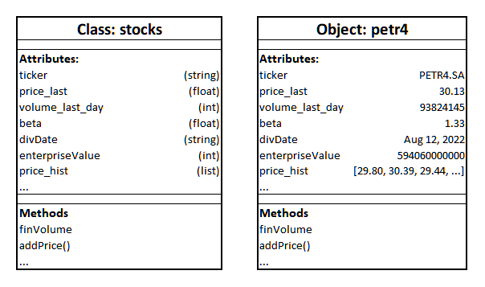

#supondo que queremos calcular a média das notas 1 e 2 pertencentes a um aluno específico
#aqui criamos uma classe e deixamos em aberto os atributos que o 'aluno' deve ter
class aluno():
#criando os atributos (nome e notas) da classe aluno
def __init__(self, nome, nota1, nota2):
self.nome = nome
self.nota1 = nota1
self.nota2 = nota2
#criando métodos para determinar a média desse aluno
def media(self):
return (self.nota1 + self.nota2) / 22 Introdução ao Python II
Introdução
Esta aula aborda mais alguns conceitos básicos de python:
- OOP: O que é? E como funciona?
- Coleções: Quais os tipos?
- Variáveis: Como aplicá-las?
2.1 OOP: O que é? E como funciona?
O Objeto como foco de estudo
Começamos com uma apresentação.
O objetivo de criar uma função era dar um nome à uma operação específica, para que não seja necessário escrever essa operação por extenso toda vez que se precise realizá-la. Além disso, fica muito mais fácil fazer manutenção no código se existe um erro nessa operação.
As classes seguem um objetivo similar, mas servem para dar nome a uma estrutura de dados.
2.1.1 Objetos, Classes e Métodos
Quais os elementos da OOP?
- Objeto (object) é uma entidade que possui um comportamento específico;
- Classe (class) é uma estrutura que define as características e o comportamento dos objetos;
- Atributos ou Propriedades (Attributes ou Properties): São dados ou estados característicos daquela classe. Por exemplo, “preço médio”, “volume diário” e “ticker” são propriedades da classe stocks (ações);
- Métodos: São as funções que são específicos daquela classe, muitas vezes utilizam os próprios atributos da classe para realizar uma operação. Por exemplo, pode-se criar um método na classe “ações” que mutliplique o preço médio pelo volume diário para se obter o volume financeiro médio.

2.1.2 Sintaxe e Definição
Para criar uma classe no python, usamos a palavra class, o nome da classe (com a primeira letra em maísculo, por convenção), e “()”, indicando uma ação (no caso, criar um objeto da classe): “class algo()”
Normalmente, a definição de uma classe começa pelo método init. ele é um método especial, o método construtor, e indica que todas as linhas subordinadas a ele devem ser executadas quando um objeto daquela classe é criado. As linhas que estão subordinadas ao método init são aquelas que estabelecem os atributos.
Além disso, a palavra self é uma referência a todos os atributos de um objeto. Os métodos levam como argumento o próprio objeto em si, ou seja, o método que tem self como argumento pode acessar e trabalhar com todos os elementos do objeto em si.
Depois do método construtor (init), em geral, vêm os métodos ordinários, aqueles que executam ações.
#damos um nome e notas para calcular a média dessa pessoa
michel = aluno(nome = "Michel", nota1 = 7, nota2 = 10)
#pedimos para o programa exibir o resultado
print(michel.nome, michel.media())Michel 8.5#O que é o `self` que víamos na definição da classe? É só um "placeholder" para o nome do objeto. Quando criamos um objeto, com um nome, dessa classe, é como se os métodos virassem:
def __init__(nome, nota1, nota2):
michel.nome = nome
michel.nota1 = nota1
michel.nota2 = nota2
def media():
return (michel.nota1 + michel.nota2) / 2#Exemplo mais elaborado sobre ações
#determinando as características/atributos das ações que vamos estudar
class Stocks():
def __init__(self, ticker_name, price_inDolars, volume_inUnits, beta_float,
divDate_string, enterpriseValue_inDolars, price_inList):
self.ticker = ticker_name # preenchendo name com o valor referente ao argumento full_name
self.price_last = price_inDolars
self.volume_last_day = volume_inUnits
self.beta = beta_float
self.divDate = divDate_string
self.enterpriseValue = enterpriseValue_inDolars
self.price_hist = price_inList
self.portShare = 0# não vem de argumento, sempre uma ação começa com esse valor de argumento
def eatfinVolume(self): # self entra como argumento para que o procedimento possa acessar os atributos e seus valores.
return self.price_last * self.volume_last_day
def addPrice(self, price):
self.price_hist.append(price)
def changeShare(self, newshare):
self.portShare = newshare
#Aqui pedimos para o código exibir a ação e seus atributos
def printPrice(self):
print("The stock " + self.ticker + " has a last price of " + str(self.price_last))
def __str__(self):
return "The stock " + str(self.ticker) + " has a last price of " + str(self.price_last)#Dando valores e nomes aos atributos
petr = Stocks(ticker_name = "PETR4.SA",
price_inDolars = 30.13,
volume_inUnits = 93824145,
beta_float = 1.33,
divDate_string = "Aug 12, 2022",
enterpriseValue_inDolars = 594060000000,
price_inList = [29.80, 30.39, 29.44])
#Exibindo os dados encontrados:
print(petr.ticker)
petr.eatfinVolume()
petr.printPrice()
petr.price_last = 31.23
print(petr.price_last)
petr.nationality = "Brazil"
print(petr.nationality)
print(petr)PETR4.SA
The stock PETR4.SA has a last price of 30.13
31.23
Brazil
The stock PETR4.SA has a last price of 31.232.2 Coleções: Quais os tipos?
Transformando vários itens em uma variável
Quais os tipos de coleções?
- Listas
- Tuplas
- Sets
- Dicionários
O nome coleções vem de “conjunto” de dados, e existem quatro tipos diferentes, que servem para objetivos diferentes, baseados em suas características:
| Ordenado | Mutável | Duplicatas | |
|---|---|---|---|
| Listas | sim | sim | sim |
| Tuples | sim | não | sim |
| Sets | não | não | não |
| Dicionários | sim | sim | não |
Em termos mais simples listas são as mais flexíveis e menos específicas, tuples são listas imutáveis, e dicionários são listas nomeadas. Sets, os mais restritivos, funcionam como o conceito de “conjunto” da matemática.
Cada coleção tem seus próprios métodos, dêem uma olhada neles nos tutoriais abaixo:
- W3Schools: https://www.w3schools.com/python/python_lists.asp (mais simples e sucinto);
- Documentação do Python: https://docs.python.org/3/tutorial/datastructures.html#tuples-and-sequences (mais técnico, mais informações).
2.2.1 Listas
São estruturas de dados que servem para transformar um grupo de itens em uma só variável.
2.2.1.1 Sintaxe e Definição
- Podemos criar uma lista de duas formas: definindo-a diretamente por meio de “nome_qualquer_da_lista = [item1, item2, …, itemx]”, só colocando os itens dentro dos colchetes; ou também podemos transformar outros iteráveis (como bibliotecas e tuplas, que veremos mais tarde) em listas com “nome_qualquer_da_nova_lista = list(nome_do_iterável)”. Simplificando: list = [ ] ou list( )
- Para saber qual o tipo/ classe de algum objeto no código, utilizamos “type(nome_do_objeto)”. Por exemplo, ao escrever “print(type(objeto))”, sendo objeto uma lista, devemos ter como retorno: “<class ‘list’>”
2.2.1.2 Acessar e Alterar
- Técnicas de indexing [] e [:]
- Podemos acessar itens específicos das listas atribuindo-lhes números, de acordo com a ordem que aparecem na lista usando [número]. Por exemplo, em lista = [João, Pedro, Carlos] podemos selecionar o objeto João e exibí-lo com print(lista[0]). Seguindo essa lógica, Pedro representa o elemento 1 e Carlos o elemento 2.
- Também podemos acessar intervalos dentro das listas com [número1:número2]. Exemplo: em lista = [a,b,c,d,e], podemos acessar e exibir as letras de “a” a “d” com print(lista[0:3])
- Nested lists
- É quando temos listas com outras sublistas dentro delas como objetos. lista = [[a,b,c], [1,2,3], [x,y,z]]
- Acessamos as sublistas assim como fazemos para objetos numa lista normal, mas para acessar objetos de dentro das sublistas utilizamos outro método. Ex: para exibir a letra “b” da primeira sublista no exemplo anterior, temos print(lista[0][1]). Em resumo, apenas adicionamos o número referente ao elemento que queremos acessar da sublista ao lado do número que representa a sublista.
2.2.1.3 Adicionar, Unir, e Remover
- Para adicionar elementos a uma lista ou unir várias listas, temos diferentes métodos:
- método APPEND: escrevemos “lista.append(item)” para adicionar um item ao final da lista. ex: lista = [1,2] –> lista.append(3) –> lista = [1,2,3]
- método INSERT: escrevemos “lista.insert(posição, item)” para adicionar um item em uma posição específica. ex: lista = [a,b,c] –> lista.insert(1, x) –> lista = [a,x,b,c] elemento x adicionado na posição 1.
- método EXTEND: escrevemos “lista1.extend(lista2)” para adicionar os elementos da lista2 na lista1. ex: lista1 = [1,2] e lista2 = [3,4] –> lista1.extend(lista2) –> lista1 = [1,2,3,4]
- método “+”: escrevemos “lista3 = lista1 + lista2” para criar uma nova lista com os elementos de outras listas. ex: lista1 = [1,2] e lista2 = [3,4] –> lista3 = lista1 + lista2 –> lista3 = [1,2,3,4]
- Para remover itens das listas:
- método CLEAR: escrevemos list.clear() pra remover todos os elementos da lista, deixando-a vazia.
- método POP: escrevemos list.pop(número_do_item) para remover um item da lista chamando-o pelo seu número ou index dentro da lista.
- método REMOVE: escrevemos list.remove(item) para remover um item da lista chamando-o pelo nome.
- método DEL: escrevemos del list[número_do_item] para remover um item da lista pelo seu index, assim como em pop, porém podemos também remover um itervalo utilizando del list[index1:index2].
2.2.1.4 Tamanho, Ordem, e Posição
- função LENGTH: utilizamos len(lista) para saber quantos itens há dentro de uma lista. ex: print(len(lista)) –> retorno: número de itens da lista
- função SORT: utilizamos lista.sort() para reorganizar uma lista com números em ordem crescente
- função REVERSE: utilizamos lista.reverse() com o mesmo objetivo de sort, mas em ordem decrescente
- função INDEX: utilizamos lista.index(item) para descobrir o index/ número na lista do item
- função COUNT: utilizamos lista.count(item) para descobrir quantas vezes o mesmo item aparece dentro de uma lista.
- OBSERVAÇÃO: lembre-se que para exigir um retorno/ uma resposta do programa é necessário escrever print, assim como no exemplo dado na função length, se não o código vai apenas fazer alterações sem exibir nada!
2.2.1.5 Comparadores
- OPERADOR “==” e “!=”: “==” verifica se duas listas são iguais, tem elementos e quantidades similares. “!=” é o contrário, verifica se listas são diferentes. Ex: lista1 = [1,2] e lista2 = [1,2] e lista3 = [3,4] –> print(lista1 == lista2) e print(lista2 == lista3) –> retornos: True e False
- OPERADOR “>”, “>=”, “<” e “<=”: verificam se as listas com números são menores, maiores ou iguais. Elas comparam elemento por elemento na ordem que aparecem e não o total, se uma delas tiver mais elementos e tiver elementos iguais a outra, a com mais elementos será considerada a maior. Ex: lista1 = [1,2,4], lista2 = [1,3,2] e lista3 = [1,2,4,5] –> print(lista1 > lista2) e print(lista1 < lista3) –> retornos: False e True
- OPERADOR “IS” e “IS NOT”: verificam se as listas se referem ao mesmo objeto na memória ou não. É complicado e não é a mesma coisa que “==” e “!=”. Listas com os mesmos elementos não são necessariamente a mesma coisa. EX: lista1 = [1,2] e lista2 = lista1 e lista3 = [1,2] –> print(lista1 is lista2) e print(lista1 is lista3) –> retornos: True e False
- OPERADOR “IN” e “NOT IN”: verificam se um item está ou não em uma lista. Não é possível comparar listas com elementos de dentro de outra listas, a menos que a lista seja literalmente uma objeto ou sublista de dentro da outra lista. (meio confuso, mas vc vai entender, confia) ex: lista1 = [1,2] e lista2 = [1] –> print(1 in lista1) e print(lista2 in lista1) –> retornos: True e False
2.2.1.6 Loops e Comprehension
- Loops: funções que criam uma repetição de outros códigos
- FOR: utilizamos “for” para iterar (gerar uma repetição) sobre elementos de uma lista. ex: lista = [1, 2, 3, 4] –> for item in minha_lista: print(item) –> retorno: 1, 2, 3, 4. Neste exemplo, o for vai fazer o código repetir o print para cada uma dos itens de dentro da lista.
- WHILE: utilizamos “while” para repetir o código enquanto uma condição específica for verdadeira. ex: contador = 0 –> while contador < 5: print(contador) contador += 1 –> retorno: 0, 1, 2, 3, 4
- BREAK: utilizamos “break” para quebrar um loop
- CONTINUE: utilizamos “continue” para pular para outra iteração do código
- Comprehension: Criação de listas a partir de funções curtas, geralmente com uso de for
- FOR: (de novo ele?) utilizamos o for para que uma função se repita e forme os elementos de uma nova lista
- IF: utilizamos if para estabelecer uma condição que deve ser atendida para que o código rode
2.2.1.7 Alguns exemplos:
#Exemplo: Criado listas a partir de []
lista = [1, 2, 5] # definindo a lista com os itens "1", "2" e "5"
print(lista) #Exibindo a lista
print(type(lista)) #Exibindo o tipo/ a classe do objeto criado, no caso uma lista[1, 2, 5]
<class 'list'>#Exemplo: Criando listas a partir de list()
text = 'Python' #Texto como objeto que servirá de exemplo
text_list = list(text) #Transformando o texto em uma lista
print(text_list) #Exibindo a nova lista criada
print(type(text_list)) #Exbindo o tipo/ a classe do objeto criado, no caso uma lista['P', 'y', 't', 'h', 'o', 'n']
<class 'list'>#Exemplo: Uso de BREAK e CONTINUE
for i in range(5): # Gera números até ou menores que 5
if i == 3:
break # Sai do loop quando i for igual a 3
print(i)
# Output: 0 1 2
for i in range(5):
if i == 2:
continue # Pula o valor 2 e continua
print(i)
# Output: 0 1 3 40
1
2
0
1
3
4#Exemplo de Comprehension List bem simples
quadrados = [] # Criando lista vazia
for x in range(1, 6): # Elementos serão os números entre 1 até 6
quadrados.append(x**2) # Elevamos os itens dentro da lista ao quadrado
print(quadrados) # Exibindo o resultado[1, 4, 9, 16, 25]2.2.2 Tuples
Semelhantes às listas, porém são imutáveis: não é possível alterar seus itens umas vez criadas.
2.2.2.1 Sintaxe e Definição
- Para criar uma tupla, escrevemos “nome_da_tupla = (itens)”, igual às listas, mas substituindo as chaves por parênteses.
- Podemos usar “type()” para identificar uma tupla no código, que vai retornar “<class ‘tuple’>” #### Similaridades com Listas
- Como tuplas são imutáveis, não é possível utilizar as mesmas funções que utilizamos para modificar a ordem ou os itens das listas. Contudo, nós podemos gerar uma tupla através de uma lista, ou transformar uma tupla em lista para criar outra tupla modificada em cima disso.
- Não existe Tuple Comprehension direta como no caso das listas. Para criar fazer uma comprehension usamos a sintaxe “tupla = tuple(insert_formulinhas_mágicas_here)”
2.2.2.2 Unpacking
- É uma técnica na qual atribuímos uma variável a cada item de dentro da tupla, como se fossem coordenadas. Para fazer isso, basta chamar a lista criada e dar nomes às variáveis. ex: tupla = (1,2,3) –> tupla = a, b, c –> a= 1; b=2; c = 3.
# Exemplo de modificação de tuplas
# Tupla original
minha_tupla = (1, 2, 3, 4)
# Convertendo a tupla para uma lista
minha_lista = list(minha_tupla)
# Modificando a lista
minha_lista.append(5)
# Transformando em Tupla novamente
minha_tupla2 = tuple(minha_lista)
# Mostrando o resultado
print(minha_tupla2)(1, 2, 3, 4, 5)# Exemplo unpacking
# Tupla com três elementos
minha_tupla = (10, 20, 30)
# Unpacking: cada elemento da tupla é atribuído a uma variável
pão, de, batata = minha_tupla
# Exibindo os valores atribuídos
print(pão)
print(de)
print(batata)10
20
302.2.3 Dicts
Dicionários são estruturas de dados que também armazenam itens dentro de si, mas que são acessáveis por chaves.
2.2.3.1 Sintaxe e Definição
- Para criar uma biblioteca usamos “dicionário = {chaves:itens}” ou “dicionário = dict(chaves:itens)”. Há também a sintaxe “.fromkeys”, que associa uma sequência de chaves a um valor dado.
- Neste caso, “type()” retornará “<class ‘dict’>”
2.2.3.2 Similaridades com Listas
Algumas operacoes que sao validas tanto para listas quanto para bibliotecas: * Para remover itens de dicts, podemos usar os metodos .pop, del e clear(), extamente como nas listas, mas utilizando as chaves para se referir aos elementos. * Tambem e possivel fazer dicts comprehension. Escrevemos: dicionario = {expressao_que_gera_valores_para_as_chaves}
2.2.3.3 Acessar e Alterar
- Tecnicas de indexing:
- .KEYS: podemos escrever nome_biblioteca.keys() para acessar todas as suas chaves.
- .VALUES: de forma contrária, se quisermos acessar os valores aos quais as chaves se referem, escrevemos nome_biblioteca.values()
- .ITENS: retorna todos os pares de valores e chaves: nome_biblioteca.itens()
- .GET: retorna o valor de uma chave específica e retorna “none” se a chave não existir: nome_biblioteca.get(chave)
- Alterando os valores das bibliotecas:
- .UPDATE: adiciona chaves e atualiza valores de chaves que já existiam, como se fosse uma sobreposição de bibliotecas. biblioteca_original.update(biblioteca_nova)
- .POP: assim como nas listas, escrevemos nome_biblioteca.pop(chave) para retirar um dos elementos da biblioteca e retornar o seu valor.
- .POPITEM: retira o último par chave-valor na ordem da lista e retorna esse mesmo par. Sua sintaxe é nome_biblioteca.popitem()
- .SETDEFAULT: podemos escrever nome_biblioteca.setdefault(chave, valor) para adicionar uma nova chave e valor à biblioteca. Se a chave já existir, retorna apenas o valor original associado à ela, independente do valor que foi escrito no setdefaut.
#Exemplo de dicts comprehension:
quadrados = {x: x**2 for x in range(5)}
print(quadrados)
print(quadrados.keys()){0: 0, 1: 1, 2: 4, 3: 9, 4: 16}
dict_keys([0, 1, 2, 3, 4])2.2.4 Sets
É uma estrutura que carrega dados únicos (não se repetem) e desordenados (não podem ser acessados por índice como nas listas). É possível modificá-la e é útil quando precisamos de itens não repetentes e a ordem desses elementos é irrelevante. Sua sintaxe é “nome_set = {itens}”.
2.2.4.1 Sintaxe e Definição
- Para criar um set, podemos transformar outras coleções ou estruturas (como strings (textos), tuplas, listas, etc) para criar um novo set por meio de novo_set = set(nome_da_lista/string/tupla).
- type() retornará <class ‘set’>
2.2.4.2 Similaridades com Listas
- Assim como nas listas, podemos usar comprehension, unir, ver interseções e diferenças entre os sets.
- A sintaxe para criar sets a partir de funções (comprehension) é: set = {expressão for item in iterável}
2.2.4.3 Acessar e Alterar
- .ADD: escrevemos nome_set.add(item) para adicionar um item ao set.
- .DISCARD: escrevemos nome_set.discard(item) para remover um item do set
2.2.4.4 Set Operations
- .UNION ou (|): há dois modos de unir dois sets em um novo set, podemos escrever “set3 = set1.union(set2)” ou “set3 = set1 | set2”
- .INTERSECCTION ou (&): para retornar um set com os elementos comuns entre dois outros sets, escrevemos “set1.intersection(set2)” ou “set1 & set2”
- .UPDATE ou (|=): adiciona os elementos de um set a outro, modificando o set original. “set1.update(set2)” ou set1 |= set2
- .ISSUBSET ou (<) ou (<=): verifica (retorna True ou False) se todos elementos estão contidos em outro subset. “set1.issubset(set2)” ou “set1 <= set2”, se retorno for True, então set1 é subconjunto de set2.
- .ISSUPERSET ou (>) ou (>=): faz o contrário do issubset, verifica se todos os elementos de outro set estão contidos no set analizado. “set1.issuperset(set2)” ou “set1 >= set2”, se retorno for True, então set1 é superconjunto de set2.
- .ISDISJOINT: verifica se dois sets não têm elementos comuns. “set1 = {1, 2, 3}”, “set2 = {4, 5, 6}” –> “print(set1.isdisjoint(set2))” –> retorno: “True” (não têm elementos em comum)
- .DIFFERENCE ou (-): retorna um novo set dos elementos que estão em um set mas não na outro. “set1.difference(set2)” ou “set1 - set2”
- .SYMMETRIC_DIFFERENCE ou (^): retorna um novo set contendo os elementos que estão em apenas uma dos sets “set1.symmetric_difference(set2)” ou “set1 ^ set2”
2.2.5 Funções Sobre Iteráveis
my_list = ['São Paulo', 'Flamengo']
enumerate(my_list), list(enumerate(my_list))
#type(enumerate(my_list))(<enumerate at 0x7e7ff6f7fec0>, [(0, 'São Paulo'), (1, 'Flamengo')])#sem enumerate:
index = 0
for i in my_list:
print('Parabéns ' + i + '! Você ficou em ' + str(index + 1) + 'º lugar!')
index += 1Parabéns São Paulo! Você ficou em 1º lugar!
Parabéns Flamengo! Você ficou em 2º lugar!#com enumerate:
for index, i in enumerate(my_list):
print('Parabéns ' + i + '! Você ficou em ' + str(index + 1) + 'º lugar!')
print("cof cof Copa do Brasil cof cof")Parabéns São Paulo! Você ficou em 1º lugar!
Parabéns Flamengo! Você ficou em 2º lugar!
cof cof Copa do Brasil cof cofdef maior_que_dois(x):
return x > 2
#Ou utilizar uma função anônima "lambda": lambda x: x > 2
my_list = [1,2,3,4]
print(list(filter(maior_que_dois, my_list)))
print(list(filter(lambda x: x>2, my_list)))[3, 4]
[3, 4]my_map = list(map(maior_que_dois, my_list)) # map: aplicar uma função para todos os itens
my_map[False, False, True, True]print(my_list)
print(my_map)
[my_list, my_map]
[(my_list[i], my_map[i]) for i in range(4)]
list(zip(my_list, my_map))
# zip(): une tuplas, mas é um objeto próprio
# → precisa fazer tuple(zip()) para ver a tupla mesmo[1, 2, 3, 4]
[False, False, True, True][(1, False), (2, False), (3, True), (4, True)]2.3 Variáveis: Como aplicá-las?
Falamos sobre como variáveis são um conjunto nome-valor. Vamos explorar um pouco mais essa ideia.
Referência: https://nedbatchelder.com/text/names.html (fonte dos diagramas).
Obs: a discussão aqui introduz um conceito teórico, do mundo da Ciência da Computação. Além de ser algo interessante, que vai ajudar você a entenderem como linguagens de programação funcionam, vai ajudar na prática a evitar um tipo específico de erro.
Considere o código x = 23, nós temos o nome “x” fazendo referência ao valor (na memória do computador) “23”:
Se fizermos y = x, não criamos um novo objeto, mas temos agora um novo nome apontando para o mesmo valor:
Note que poderia ser o contrário, na criação de y, criava-se um novo valor (local na memória) para ele, como abaixo, mas não é.
E se alterarmos a variável y, o que pode acontecer?
- O valor (o único que existe) é alterado, e os dois nomes agora fazem referência a esse valor atualizado.
- Cria-se um novo valor para
y, e agora cada nome se refere a um valor diferente.
No Python, neste caso, o que acontece é a segunda opção.
Se rodarmos y = 12, o que não acontece é:
E sim:
Isso é, o valor foi primeiro copiado (para um novo local da memória), e depois alterado. Esse comportamento tem o nome de “copy-on-modify”.
Em oposição:
- Poderíamos chamar o comportamento em vermelho de “copy-on-creation”.
- O comportamento da “opção 2.” é chamado de “modify in place”.
Mas esse comportamento depende do tipo do objeto. No exemplo acima, o valor foi copiado, porque era imutável. Alguns tipos de valores são mutáveis e são “modified-in-place”.
Vocês viram que listas são mutáveis, vamos ver um exemplo com elas.
O código:
nums = [1, 2, 3]
tri = numsGera:
E se rodarmos nums.append(4)? Listas são mutáveis, então não criaremos uma cópia/um novo valor para nums, e sim, modificaremos o valor a quem nums se refere, in-place:
Essa diferença de comportamento, a depender do tipo do objeto, gera muita confusão. Para usuários de R, notem que no R, todos (menos um) os tipos de objetos são imutáveis, e são copied-when-modified, no Python, isso não é verdade.
Do artigo do Ned Batchelder:
This Mutable Presto-Chango is the biggest issue people have with Python’s names and values. A value is shared by more than one name, and is modified, and all names see the change.
Keep in mind, this is not a bug in Python, however much you might wish that it worked differently. Many values have more than one name at certain points in your program, and it’s perfectly fine to mutate values and have all the names see the change. The alternative would be for assignment to copy values, and that would make your programs unbearably slow.
Agora, vocês sabem o mecanismo por trás desse comportamento, e podem evitar cometer erros em relação à isso.
Quando vocês vão criar um objeto mutável com base em outro, deve-se perguntar: “eu quero que esse nome tenha a sua própria cópia independente dos dados, ou quero que ambos os nomes façam referência ao mesmo dado?”.
- Se a sua intenção é a segunda, faça
y = x. - Se é a segunda, os objetos mutáveis tem um método
.copy()exatamente para isso, facay = x.copy()
2.4 Recapitulando!
- Conceitos importantes de OOP
- Classe: Estrutura dos objetos
- Objeto: A base de tudo
- Encapsulamento: Os dados e operações são protegidos, é necessário conhecimento prévio para interagir com uma classe
- Herança: Uma classe (subclasse) pode reutilizar códigos de outras classes (superclasses)
- Poliformismo: Classes podem adotar métodos com o mesmo nome, mas que geram comportamentos diferentes
- Abstração: Os dados e operações são parcialmente ocultos, para simplificar o uso
- Tipos de coleções (estruturas de dados)
- Listas: ordenada, mutável, “[]”
- Tuplas: ordenada, imutável,“()”
- Dicts: ordenada, mutável, acesso dos itens por meio de chaves, “{}”
- Sets: desordenada, mutável, “{}”
- Variáveis
- Variável = nome associado a um valor, pense nisso como numa equação matemática “f(x)” em que podemos atribuir valores quaisquer a x, que seria o nome da variável, a fim de encontrar um resultado y.
- Nós podemos mudar os valores das variáveis após a definição de uma variável, no nosso exemplo, podemos no mesmo código escrever que x vale 1 e depois mudar para x = 2, por exemplo.
- Em python, variáveis são mutáveis!
2.5 Extras
2.5.1 f-strings
É uma forma simples de estruturar uma string (texto) dentro do python. Isso permite personalizar mensagens de forma rápida.
#Exemplo de f-string
nome = 'Maria'
idade = 30
# Usando f-string para formar a mensagem
mensagem = f'{nome} tem {idade} anos.'
print(mensagem)2.5.2 Funções Úteis
Daqui em diante, a aula é 100% expositiva. Vamos explicar as funções mais essenciais, e o resto fica aqui de consulta para vocês.
Referência: https://docs.python.org/3/library/functions.html
2.5.2.1 Funções relacionadas à tipos de variáveis
# O que é: bool é a classe "binária", ou seja, fala se o valor, no output, é "certo" ou "errado". Se o argumento (o que está escrito entre parênteses) conter um zero, nenhum número, ou não é o que estamos procurando, este processo retornará com um "false". Caso contrário, o output será "true".
# Para que serve: essa classe é na verdade uma subclasse da classe "int" (classe apresentada na seção "Funções relacionadas à tipos de variáveis"). Ela é usada para decobrirmos se um argumento é verdadeiro/falso.
bool(0), bool(1), bool(1811275162543)(False, True, True)# O que é: float() é a classe que transforma um número escrito sem ponto ou como uma mistura de letras e números em um número com número decimais.
# Para que serve: essa classe é na verdade uma subclasse da classe "int" (classe apresentada na seção "Funções relacionadas à tipos de variáveis"). Ela é usada para conseguirmos trabalhar com números mais precisos e menores, sem zeros demais, por exemplo.
float(10), float(3.5), float('3.5')(10.0, 3.5, 3.5)# O que é: int() é a classe que transforma um número escrito com número decimais ou como uma mistura de letras e números em um número sem número decimais e arrendodado. Quando não colocamos número, o output é zero.
# Para que serve: essa classe é usada para podermos trabalhar com números sem decimais, e também para ajudar a evitar bugs ao rodar o código com números com muitas casas decimais.
int('8'), int(10.7)'8'# O que é: str() é a classe que transforma em string o que está em parênteses, independente do que seja.
# Para que serve: essa classe é usada para os bytes, como tudo está escrito nos parênteses, por padrão, serem convertidos em string. Esse método funciona sem que os argumentos sejam codificados ou seja, os eventuais erros de codificação não são apresentados.
str(8)'8'# O que é: type() é a classe que identifica o que está escrito entre parênteses.
# Para que serve: essa classe é usada para identificar qualquer tipo de módulo padrão, que são os tipos incorporados por padrão (são todos os módulos vistos até aqui até o final da seção "Outras funções").
type([1, 2])list2.5.2.2 Funções sobre criação de variáveis
# O que é: dict() é a classe que cria um "dicionário" entre palavras e números (sejam eles com decimais, ou não).
# Para que serve:
a = dict(one=1, two=2, three=3.2)
b = {'one': 1, 'two': 2, 'three': 3.2}
c = dict(zip(['one', 'two', 'three'], [1, 2, 3.2]))
a == b == c{1: False, 2: False, 3: True, 4: True}list()[]set([1,2,2,3,4]){1, 2, 3, 4}tuple(my_list)(1, 2, 3, 4)type((1, 2))tuple2.5.2.3 Outras funções
my_list, repr(my_list), eval(repr(my_list)), eval('1+2')
# eval(): avalia um string para ver se tem como fazer contas lá dentro → se der, devolve quanto que dá([1, 2, 3, 4], '[1, 2, 3, 4]', [1, 2, 3, 4], 3)input("A aula tá legal? ") #recebe algum valor do terminal''2.5.2.4 Funções matemáticas e lógicas
abs() #módulo
divmod() #número, divisor. resultado: (parte inteira, resto)
max()
min()
pow() #base, expoente
round() #número, dígitos
sum()
all([True, True, False]) # True se todos os argumentos são true
any([True, True, False]) # True se pelo menos um argumento é verdadeiro--------------------------------------------------------------------------- TypeError Traceback (most recent call last) <ipython-input-1-e41fc4f9105a> in <cell line: 1>() ----> 1 abs() #módulo 2 divmod() #número, divisor. resultado: (parte inteira, resto) 3 max() 4 min() 5 pow() #base, expoente TypeError: abs() takes exactly one argument (0 given)
abs(-3), abs(3)(3, 3)divmod(7, 5)(1, 2)round(3.1263817241864518742612, 4)3.12642.5.2.5 Funções relacionadas à tipos de variáveis
bin(10)
hex(445125215) # números hexadecimais
int('1000', 2) # "1000 base 2"
ord('a'), chr(97) # o item numero 97 no 'dicionário' UNICODE
chr(ord('a'))
ord(chr(98))2.5.2.6 Funções sobre armazenamento de variáveis
a = 10 #lembre deste 10!
repr(dir())
# repr: retorna um string do objeto
# dir: todas os nomes no diretório atualrepr(dir([1,3]))list(globals().items())[1:5]dict(list(globals().items()))
dict(list(globals().items()))['__name__']2.5.2.7 Outras funções
open(file_path, mode) #abre um arquivo
#Mode: 'r', 'w', 'x', 'a'; '+'; 'b' ou 't'
# 'r' = read
# 'w' = write
# 'x' = Create
# 'a' = Append
# 'b' = Binary
# 't' = Texthelp() #abre o prompt de ajuda no terminal2.5.3 Bibliotecas
2.5.3.1 Como Instalar Bibliotecas
Referência: https://packaging.python.org/en/latest/tutorials/installing-packages/
Checar instalação do python (digitar no terminal): > py –version
Checar instalação do pip, o instalador de pacotes: > py -m pip –version
Instalar o pacote pelo nome: > py -m pip install nome_do_pacote
2.5.3.2 Módulo math
Referência: https://docs.python.org/3/library/math.html
import mathround(math.pi, 3)math.ceil()
math.floor()
math.trunc()
math.modf(5.256) #(0.2560000000000002, 5.0)math.comb(k_items, n_opções) #n! / (k! * (n - k)!) ) (sem ordem, sem repetição)
math.perm(k_items, n_opções) #n! / (n - k)! (com ordem, sem repetição)
math.factorial(n)math.gcd() #mdc
math.lcm() #mmc# abs(a-b) <= max(rel_tol * max(abs(a), abs(b)), abs_tol)
# rel_tol = tolerância relativa
# abs_tol = tolerância absoluta
print(math.isclose(5, 10, rel_tol=0.49, abs_tol=0))
print(math.isclose(5, 10, rel_tol=0, abs_tol=5))math.isfinite()
math.isinf()
2**(0.5), math.sqrt(2)print(math.dist((0,0), [1,1])) # distância euclidiana
print(math.hypot(1,1,1,1,1)) # norma euclidiana → distância da origem até o pontomath.cos(), math.sin(), math.tan() #etc.
math.degrees(), math.radians() #conversão de um pro outromath.e, math.pi, math.inf2.5.3.3 Módulo statistics
Referência: https://docs.python.org/3/library/statistics.html
import statistics as statstat.mean()
stat.geometric_mean()
stat.harmonic_mean()
stat.median()
stat.mode('aaabbb'), stat.multimode('aaabbbc') #('a', ['a', 'b'])stat.quantiles(iterable, n_quantis, method) #método 'inclusive' se a amostra tiver os maiores valores da população, e 'exclusive' (default) c.c.stat.stdev(), stat.pstdev()
stat.variance(), stat.pvariance()
#versões amostrais e populacionais, respectivamentestat.covariance()
stat.correlation()2.5.3.4 Módulo random
Referência: https://docs.python.org/3/library/random.html
import random as rdrd.seed(seed)rd.randint(1, 10), rd.random()rd.choices(my_list, weights=[0, 10, 80, 10], cum_weights=None, k=10)
#rd.choices(my_list, weights=None, cum_weights=[0,m, 10, 90, 100], k=10)print(my_list)
rd.shuffle(my_list) #nenhum output
my_list #alterou a listaprint(rd.sample(my_list, len(my_list), counts=None)) #nova lista
print(my_list) #não alterou a lista
print(rd.sample(my_list, 7, counts=[1, 2, 5, 2]))
#a lista usada foi [3, 2, 2, 4, 4, 4, 4, 4, 1, 1]rd.uniform(2, 8)
rd.gauss(mu, sigma)2.5.3.5 Módulo os
Referências: https://docs.python.org/3/library/os.html, https://www.youtube.com/watch?v=tJxcKyFMTGo, https://www.programiz.com/python-programming/methods/built-in/repr
import os# "repr()"
# O que é: esta função significa representation (representação). Ela retorna uma representação em string de um objeto que, idealmente, pode ser usada para recriar o objeto, facilitando a depuração.
# Para que serve: esta função serve para inspecionarmos objetos, fornecendo uma representação de tudos os objetos. Tal inspecionamento é conhecido como depuração.
# Ex.:
numbers = [1, 2, 3, 4, 5]
# Output da lista printada
printable_numbers = repr(numbers)
print(printable_numbers)[1, 2, 3, 4, 5]# "os.getcwd()"
# O que é: esta função significa "get current working directory" (obter o diretório de trabalho atual).
# É uma função da biblioteca os (sistema operacional) que retorna o caminho do diretório de trabalho atual, ou seja, o diretório em que o programa está sendo executado da própria biblioteca os.
# Para que serve: esta função serve para descobrirmos/relembramos onde está o script no sistema de arquivos (arquivo de código que usamos para programar em Python).
# Ex. de comandos para executar essa função:
#diretorio_atual = os.getcwd() # 1) Comando para obtermos o diretório de trabalho atual
#print("Diretório de Trabalho Atual:", diretorio_atual) # # 2) Comando para imprimirmos o diretório de trabalho atual.
# Nesse exemplo não há diretório especificado, mas o seu nome apareceria antes de "/content" e depois dos dois pontos (":").# "os.listdir()"
# O que é: esta função é conhecida como "listdir" (list + diretory/ lista + diretório). É uma função da biblioteca os (sistema operacional).
# Ela retorna a lista com os nomes dos arquivos regulares e diretórios contidos em um diretório especificado
# Para que serve: esta função serve para listarmos o conteúdo de pastas no sistema de arquivos. Se nenhum diretório for especificado, ela usa o diretório de trabalho atual
# Ex. de comandos para executar essa função:
#import os #1) Importamos a biblioteca necessária para executar esta função.
#diretorio = '.' # 2) Comando para especificarmos o diretório (use '.' para o diretório atual).
#conteudo = os.listdir(diretorio) # 3) Comando para obtermos a lista de arquivos regulares e diretórios.
#print("Conteúdo do diretório:", conteudo) # 4) Comando para imprimir a lista.# "os.rmdir()"
# O que é: a função "rmdir" é a abreviatura de "remove" + "diretory" (remover diretório). É uma função da biblioteca os (sistema operacional). Ela remove um diretório vazio.
# Para que serve: esta função serve para limpar diretórios que não contêm mais arquivos ou subdiretórios. Se algum diretório não estiver vazio, a função apontará que não foi possível deletá-lo.
# Ex. de comandos para executar essa função:
#import os #1) Importamos a biblioteca necessária para executar esta função.
#diretorio = 'diretorio_vazio' # 2) Especificamos o caminho do diretório que desejamos remover.
#try: # 3) Opções dos comandos para os possíveis resultados:
#os.rmdir(diretorio)
#print(f"O diretório '{diretorio}' foi removido com sucesso.") # 3a) Comando para imprimir que tal diretório foi encontrado e removido.
#except FileNotFoundError:
#print(f"O diretório '{diretorio}' não foi encontrado.") # 3b) Comando para imprimir que tal diretório não foi encontrado e por isso não foi removido.
#except OSError:
#print(f"O diretório '{diretorio}' não está vazio ou não pode ser removido.") # 3c) Comando para imprimir que tal diretório não está vazio e por isso não foi removido.# "os.removedirs()"
# O que é: a função "rmdir" é a abreviatura de "remove" + "diretories" (remover diretórios).
# É uma função da biblioteca os (sistema operacional). Ela remove um diretório e todos os seus diretórios "pais" (originários), se estiverem vazios
# Para que serve: está função serve para excluir uma estrutura de diretórios de uma vez, desde o mais aparente (interno) até o externo, garantindo que todos os diretórios vazios sejam removidos.
# Se algum diretório não estiver vazio, a função apontará que não foi possível deletá-lo.
# Ex. de comandos para executar essa função:
#import os #1) Importamos a biblioteca necessária para executar esta função.
#os.makedirs('pasta/pasta_interna', exist_ok=True) # Criamos uma estrutura de diretórios para executarmos o comando.
#try: # 3) Opções dos comandos para os possíveis resultados:
#os.removedirs('pasta/pasta_interna')
#print("Diretórios removidos com sucesso.") # 3a) Comando para imprimir que tal parte da estrutura de diretórios foi encontrada e removida.
#except FileNotFoundError:
#print("Um ou mais diretórios não foram encontrados.") # 3b) Comando para imprimir que tal parte da estrutura de diretório não foi encontrada e por isso não foi removida.
#except OSError:
#print("Um ou mais diretórios não estão vazios ou não podem ser removidos.") # 3c) Comando para imprimir que tal parte da estrutura de diretório não está vazia e por isso não foi removida.# "os.rename"
# O que é: esta função se chama "rename" (renomear). É a função da biblioteca os (sistema operacional) que renomeia arquivos ou diretórios e os substitui pelo de mesmo nome.
# Para que serve: ela pode ser usada para renomear um item (arquivo ou diretório), especificando o caminho atual e o novo nome desejado, e também para susbtituir arquivos.
# Sua principal utilidade é organizacional: dos arquivos e dos diretórios no sistema de arquivos.
# 1. Ex.: comandos para renomear itens:
#import os #1) Importamos a biblioteca necessária para executar esta função.
# item_antigo = 'item_original.txt' # 2a) Especificamos o nome antigo que desejamos renomear.
# item_novo = 'item_renomeado.txt' # 2b) Especificamos o nome novo que desejamos renomear.
# try: # 3) Opções dos comandos para os possíveis resultados:
#os.rename(item_antigo, item_novo)
#print(f"O arquivo foi renomeado para '{item_novo}'.") # 3a) Comando para imprimir que tal item não foi encontrado
#except FileNotFoundError:
#print(f"O item '{item_antigo}' não foi encontrado.") # 3b) Comando para imprimir que tal item não foi encontrado e por isso não foi renomeado.
#except OSError:
#print(f"O item '{item_antigo}' não está vazio ou não pode ser removido.") # 3c) Comando para imprimir que tal item não existe e por isso não foi renomeado.
# 2. Ex.: comandos para substituir itens:
#import os #1) Importamos a biblioteca necessária para executar esta função.
# item_antigo = 'item_original.txt' # 2a) Especificamos o nome antigo que desejamos substiruir. Lembre que é necessário especificar o tipo de item para a entendermos melhor o que o comando irá fazer.
# item_novo = 'item_substituto.txt' # 2b) Especificamos o nome novo que desejamos substiruir. Lembre que é necessário especificar o tipo de item para a entendermos melhor o que o comando irá fazer.
# try: # 4) Opções dos comandos para os possíveis resultados:
#os.rename(item_antigo, item_novo)
#print(f"O arquivo foi substituído para '{item_novo}'.") # 4a) Comando para imprimir que tal item foi encontrado e substituído.
#except FileNotFoundError:
#print(f"O item '{item_antigo}' não foi encontrado.") # 4b) Comando para imprimir que tal item não foi encontrado e por isso não foi substituído.
#except OSError:
#print(f"O item '{item_antigo}' não está vazio ou não pode ser removido.") # 3c) Comando para imprimir que tal item não existe e por isso não foi substituído.# "os.stat"
# O que é: esta função é um método do objeto de caminho da biblioteca os ou da biblioteca pathlib que retorna informações sobre um arquivo regular ou diretório, como tamanho, permissões, data de modificação, etc.
# Essa função fornece um objeto que contém vários atributos, permitindo acessar detalhes específicos sobre o arquivo regular ou diretório em questão.
# Para que serve: esta função serve para obtermos metadados (dados de dados) sem precisar abrir o arquivo. Tais metadados são importantes para entendemos melhor atributos de um dado e não seu conteúdo.
# Ex. de comandos para executar essa função:
#import os
#import time #1) Importamos as bibliotecas necessárias para executarmos esta função.
#arquivo = 'exemplo.txt' # 2) Especificamos o nome do arquivo para o qual desejamos obter informações.
#info = os.stat(arquivo) 3) Comando para sinalizarmos que queremos obter informações sobre o arquivo (metadados do arquivo).
#print("Tamanho do arquivo:", info.st_size, "bytes") # 4) Comando para imprimirmos o tamanho do arquivo.
#print(f"Data da última modificação: {time.ctime(info.st_mtime)}") # 5) Comando para imprimirmos data e hora da última modificação.
#print(f"Permissões do arquivo: {oct(info.st_mode)}") # 6) Comando para imprimirmos as permissões do arquivo.
# 7) Comando para verificarmos qual o tipo de arquivo:
#if stat.S_ISDIR(info.st_mode):
#print(f"{info} é um diretório.") # 7a) Comando para descobrimos se é um diretório.
#elif stat.S_ISREG(info.st_mode):
#print(f"{info} é um arquivo.") # 7b) Comando para descobrirmos se é um arquivo regular.
#else:
#print(f"{info} é de um tipo desconhecido.") # 7c) Comando para o código não travar se não for arquivo regular ou diretório o arquivo que está sendo analisado.2.5.3.6 Módulo ScyPy
Referências: https://docs.scipy.org/doc/scipy/tutorial/index.html#user-guide
- Estatística: https://scipy.github.io/devdocs/reference/stats.html
- Otimização: https://scipy.github.io/devdocs/reference/optimize.html
- Álgebra linear: https://scipy.github.io/devdocs/reference/linalg.html
- Interpolação: https://scipy.github.io/devdocs/reference/generated/scipy.interpolate.interp1d.html#scipy.interpolate.interp1d
import scipy.stats # é um módulo da biblioteca SciPy em Python que fornece uma ampla gama de funções e classes para trabalhar com estatísticas e distribuições de probabilidade.# O que é: esta função do módulo scipy.stats que realiza uma regressão linear entre duas variáveis
# Para que serve: esta função retorna várias informações úteis sobre a relação linear entre os dados.
# Ex. de comandos para executarmos essa função
# não precisamos conversar agora a fundo sobre essas analises, pois veremos na segunda parte do trainee.
#import numpy as np # 0) biblioteca que veremos na próxima aula.
#from scipy import stats # 1) Importamos as bibliotecas necessárias para executarmos esta função.
#x = np.array([1, 2, 3, 4, 5])
#y = np.array([2, 3, 5, 7, 11]) # 2) Definimos os números naturais em cada eixo de uma plano bidimensional.
#print("Resultados da Regressão Linear:") # 3) Comando para imprimirmos título das análises.
#print(f"Inclinação (slope): {slope}") # 3a) Comando para imprimir análise em slope.
#print(f"Intercepto (intercept): {intercept}") # 3b) Comando para imprimimos análise de intercepção.
#print(f"Coeficiente de Correlação (r-value): {r_value}") # 3c) Comando para imprimirmos análise de coeficiente de correlação.
#print(f"Valor de p (p-value): {p_value}") # 3d) Comando para imprimirmos análise de valor de p.
#print(f"Erro Padrão (std_err): {std_err}") # 3e) Comando para código não não travar se tiver algum erro.Aqui, as funções menos essenciais, de consulta para vocês.
Referência: https://docs.python.org/3/library/functions.html